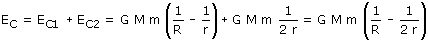

|
Se considera que la puesta en órbita de un satélite se hace en dos etapas:
En total la energía que se ha suministrado al satélite es:  Esta energía sale del trabajo del cohete propulsor que funciona en dos breves momentos: para arrancar del suelo y para recorrer la órbita |